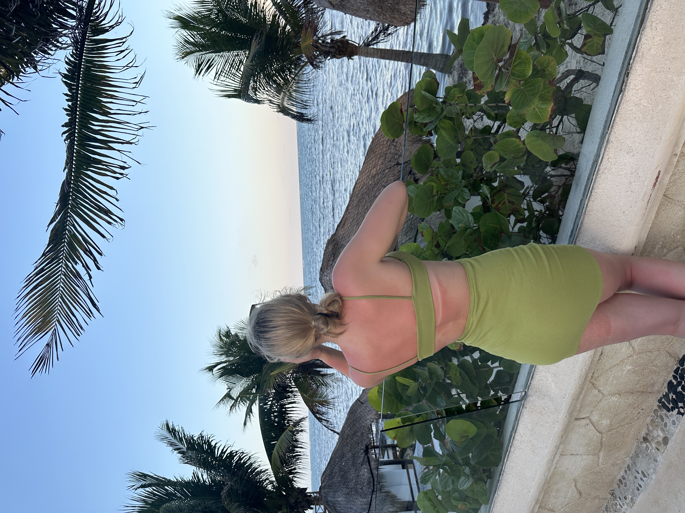
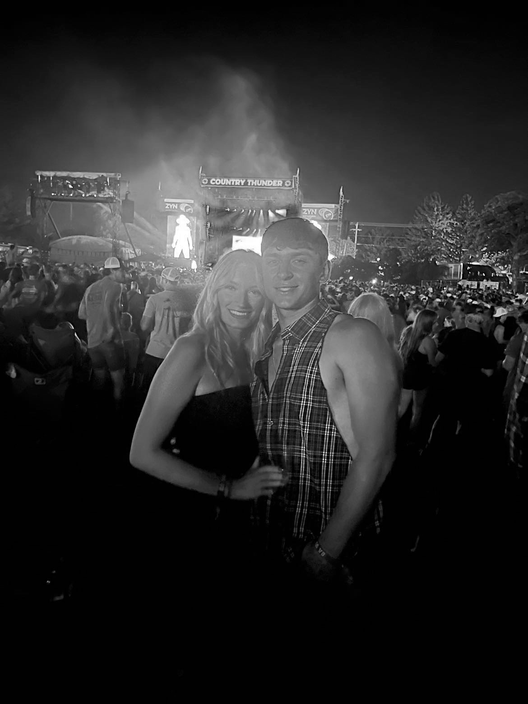

About Savannah
Hi there! I'm from Union, Illinois, a small town nestled between Huntley and Marengo. I come from a big family with four siblings. I work at a bowling alley/fine dining restaurant—it's an unusual combination, I know, but I love it! I've been there for over two years, and the best part is our regulars, most of whom are older and always make my day. At home, I have two cats named Buddy and Kanye, and a dog named Gus who always keeps things lively. In my free time, I love hanging out with my boyfriend, going on car rides, and spending time with friends. Most of my friends are off at school, but most of them are based in wisconsin, so I still get to see them every now and then. You'll also hear a lot about two of my favorite hobbies—thrifting and makeup—on the next few pages!

Boyfriend!
I'm also lucky to have a truck-obsessed boyfriend who keeps life interesting. I love going to his truck shows with him, especially because I enjoy long car rides, and it's a great excuse to explore new places. The last show we went to was in Oklahoma, and it was a lot of fun for me—though the drive was a different story for him. It was nine hours straight on those massive wheels, which made for a rough ride, and since I’m not comfortable driving his truck, I couldn't help with the driving at all. Despite that, I love being a part of his passion and sharing those experiences with him, even if it means just being along for the ride. His latest interest is trying to sell his current truck, in order to purchase a high country chevy, which doesn't make much sense to me because theres still more he wants to do to his truck.

This is a picture of my boyfriend, James and I at Country Thunder Wisconsin this last year. Country thunder is probably the event I look foward to most the whole year. Coming together with friends and camping out after going to a couple concerts is always a blast! Another plus is that you get to see some amazing artists for a fraction of what you would spend if you were to buy a ticket to one of their concerts straight up. My favorite concerts so far have been Lainey Wilson, Jon Pardi, Cody Johnson, Bailey Zimmerman, and Keith Urban.